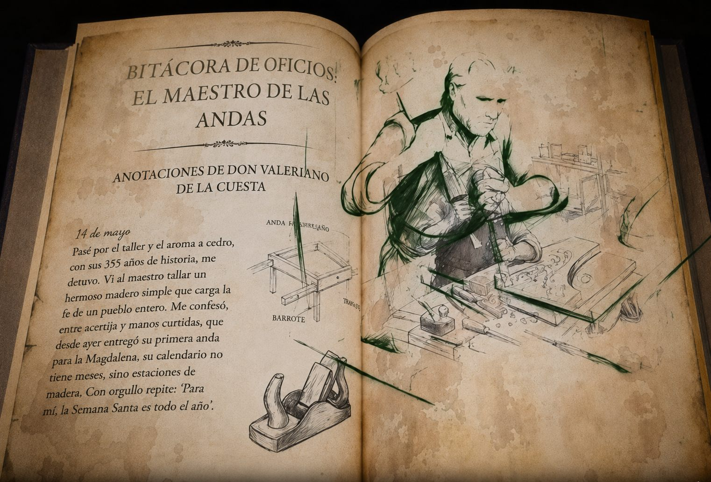
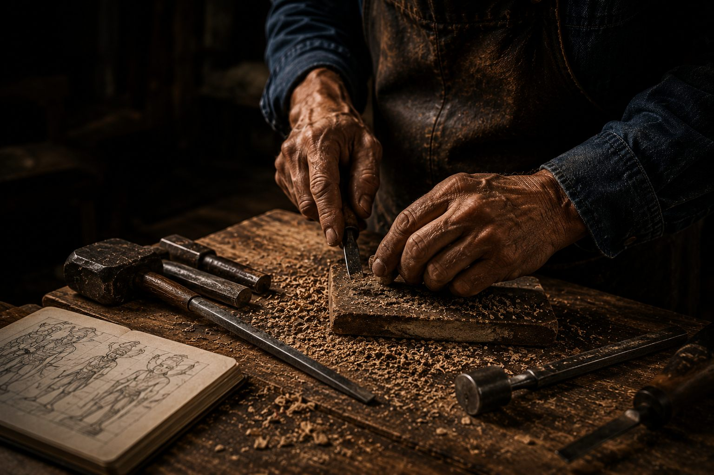
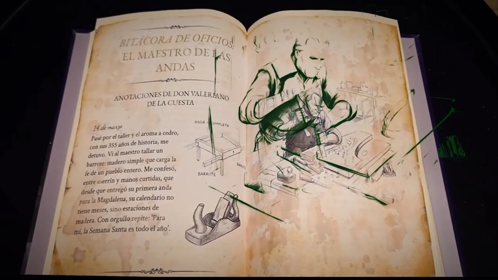
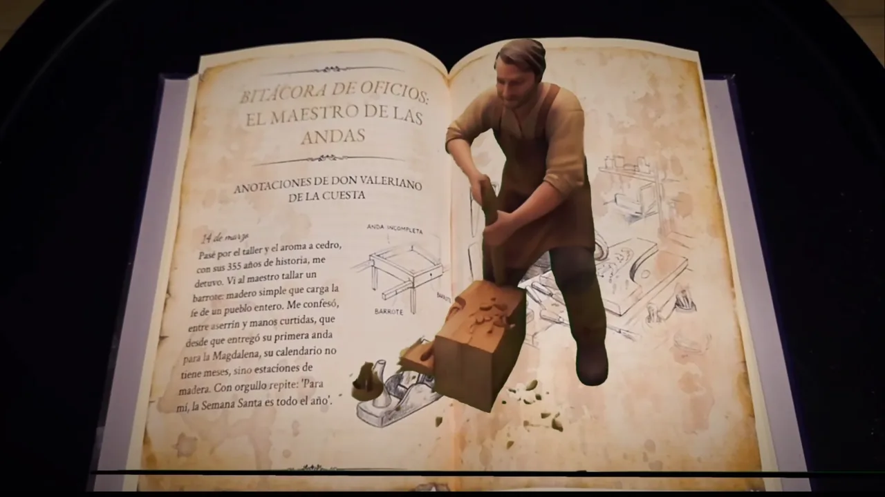

Pasos de tradición
El Códice de los Pasos es un libro en realidad aumentada sobre la carpintería de las andas de Semana Santa en Santa Fe de Antioquia. Me encargué de desarrollarlo: programé la experiencia AR en Unity y participé en su diseño.

Contexto
Pasos de Tradición es un proyecto de investigación y memoria sobre los oficios que sostienen la Semana Santa en Santa Fe de Antioquia: carpinteros, cargueros, mayordomos y sahumadoras. Un equipo de seis estudiantes lo convirtió en tres piezas: una instalación en un domo geodésico, una pieza de sombras y el Códice de los Pasos, la parte en realidad aumentada.
«Los que hacen posible la procesión rara vez aparecen en las fotografías.» Pasos de Tradición
El reto del Códice era que los planos y bocetos de la carpintería de las andas, un saber que se aprende mirando las manos de otro, se pudieran entender en tres dimensiones sin perder el valor del trazo hecho a mano.

Mi rol
Mi parte fue sobre todo el desarrollo: llevar el Códice de la idea a una app de realidad aumentada que funcionara en el teléfono.
- Desarrollo de la experiencia AR. Programé el flujo interactivo en realidad aumentada en Unity.
- Integración en Unity. Integré los elementos de la experiencia: la volumetría 3D, el sonido y el video.
- Pruebas en Android. Probé los prototipos en dispositivos Android durante todo el desarrollo.
- Diseño de la experiencia AR. Participé en el diseño de cómo se presenta el contenido sobre el libro.
Trabajé junto a Valentina Garzón Pérez, a cargo de la narrativa, el guion y el audiovisual del Códice, y de la implementación del chroma key en Unity. Ver el equipo completo ↗
Proceso
El Códice nació de la investigación de campo del equipo y se construyó en Unity, probándolo en el teléfono.
-
3.1
Investigación de campo
El equipo entrevistó y documentó a carpinteros, mayordomos y sahumadoras, con figuras como los maestros José Reyes Urrego y Juan Ciro.
-
3.2
Del boceto al volumen
Las páginas impresas se pensaron como portales: cada boceto técnico de las andas gana profundidad sobre el libro.
-
3.3
Desarrollo en Unity
Programé el flujo interactivo con marcadores de realidad aumentada e integré el contenido 3D, el sonido y el video.
-
3.4
Pruebas en Android
Probé los prototipos en dispositivos Android a medida que avanzaba el desarrollo.


Resultado
Un libro en el que los bocetos impresos cobran profundidad: las uniones de madera emergen sobre la página y las herramientas se desarman para explicar cómo funcionan. El sonido del formón, el crujido de la madera y la voz del narrador acompañan la lectura con testimonios de los maestros del oficio.